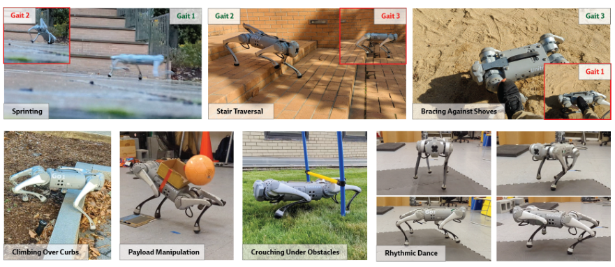
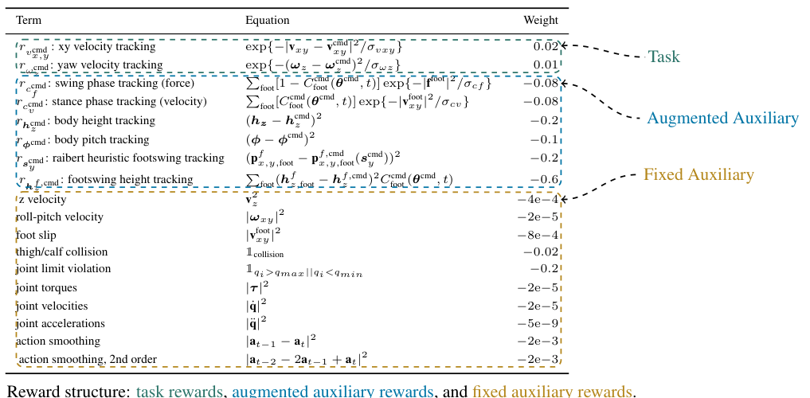
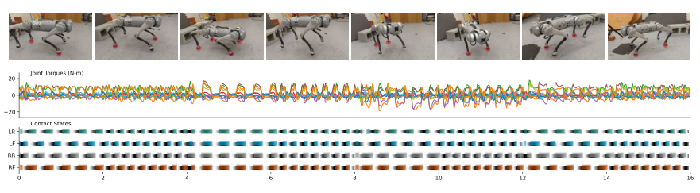
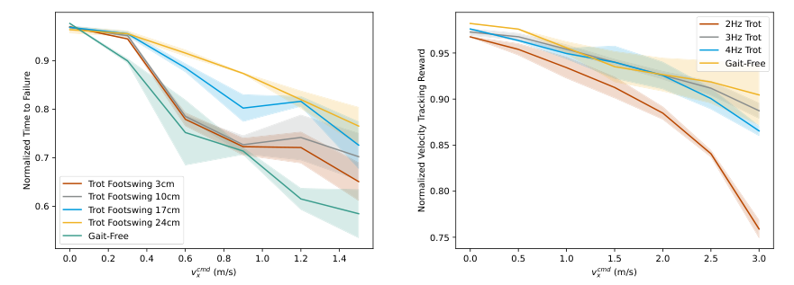

Background & Motivation
一條只在平地訓練的四足策略,卻能上下樓梯、鑽過灌木、扛住踢擊。訣竅是 Multiplicity of Behavior(MoB):讓單一策略同時學會「同一任務的多種解法」,以 8 維行為參數(步態時序、頻率、身高、俯仰、站寬、抬腳高)即時切換。策略在部署現場失敗時,不必重調獎勵重訓,人類駕駛轉個旋鈕就能換一種走法——不同走法泛化到不同場景。成果開源為 Walk These Ways 控制器。
A quadruped policy trained only on flat ground that still climbs stairs, pushes through bushes, and shrugs off kicks. The trick is Multiplicity of Behavior (MoB): one policy learns many ways of solving the same task, switched in real time by an 8-D behavior vector (gait timing, frequency, body height, pitch, stance width, footswing height). When the policy fails in the field, no reward re-tuning or retraining—a human pilot just turns a knob to walk another way, and different ways generalize to different scenarios. Released as the open-source Walk These Ways controller.

如果只有 30 秒In 30 seconds
- 問題 — 學習式運動控制器能在訓練分布內自動適應,但 out-of-distribution 失敗時沒有快速調整機制:只能重調獎勵/環境再重訓,又慢又煩;更糟的是有些環境(厚灌木)根本無法模擬、無法感知。
- Problem — Learned locomotion controllers adapt within the training distribution, but have no fast tuning mechanism when they fail out-of-distribution: the only recourse is reward/environment redesign plus retraining. Worse, some environments (thick bushes) cannot be simulated or sensed at all.
- 方法 — MoB:訓練條件策略 \(\pi(\cdot\mid \mathbf{c}_t,\mathbf{b}_t)\),把過去寫死在輔助獎勵裡的步態偏好參數化成 8 維行為向量 \(\mathbf{b}_t\)(接觸時序 \(\boldsymbol\theta^{\text{cmd}}\)、頻率 \(f^{\text{cmd}}\)、身高、俯仰、站寬、抬腳高),一條策略內含一整族步態,部署時即時切換。
- Method — MoB: train a conditional policy \(\pi(\cdot\mid \mathbf{c}_t,\mathbf{b}_t)\), turning the gait preferences formerly hard-coded in auxiliary rewards into an 8-D behavior vector \(\mathbf{b}_t\) (contact timing \(\boldsymbol\theta^{\text{cmd}}\), frequency \(f^{\text{cmd}}\), height, pitch, stance width, footswing height): one policy carries a whole family of gaits, switchable at deployment.
- 結果 — 只在平地訓練,真機 Unitree Go1 零重訓完成:樓梯/路緣平滑跨越、16 cm 平台地形(存活 0.88 vs gait-free 0.83)、鑽 22 cm 橫杆、抗側踢、3 m/s 衝刺跨 60 cm 溝、90 bpm 編舞;代價是平地任務性能略降(vx 追蹤 0.92 vs 0.94)。
- Results — Trained on flat ground only, on a real Unitree Go1 with zero retraining: smooth stair/curb traversal, 16 cm platform terrain (survival 0.88 vs 0.83 gait-free), crawling under a 22 cm bar, bracing against shoves, a 3 m/s sprint leaping a 60 cm gap, 90 bpm choreography; the cost is slightly lower in-distribution performance (vx tracking 0.92 vs 0.94).
領域脈絡Field context
2020–2022 的腿式機器人主流是「模擬大規模訓練 + 自動適應」:Lee et al. 2020、RMA(Kumar et al. 2021)從觀測歷史線上估計環境參數(online system identification)再讓策略適應。這條路的前提有二:環境變化要先被建模進訓練,且參數要能從感測觀測中估出來。兩者在真實世界常常不成立。
The 2020–2022 mainstream in legged robotics was "large-scale sim training + automatic adaptation": Lee et al. 2020 and RMA (Kumar et al. 2021) estimate environment parameters online from observation history (online system identification) and let the policy adapt. This rests on two premises: environment variation must be modeled into training a priori, and its parameters must be estimable from sensing. Both often fail in the real world.
另一條共識:只用任務獎勵(速度追蹤)學出的步態從未成功轉移到真機,必須加輔助獎勵(接觸節奏、平滑度、抬腳高…)。本文的關鍵重讀:輔助獎勵其實就是「泛化偏置」——固定它,就固定了機器人失敗的方式。
Another consensus: gaits learned from the task reward alone (velocity tracking) have never transferred to real hardware; auxiliary rewards (contact schedule, smoothness, foot clearance...) are mandatory. The key re-reading in this paper: auxiliary rewards are really generalization biases—fixing them fixes the way the robot fails.
這篇把泛化問題從「機器自動估計環境」改寫成「人(或未來的高層策略)選擇行為」。它刻意選了一個極端設定——只在平地訓練、測試於非平地——來證明:訓練分布內的解法多樣性本身就是一種對付分布外的資源。[導讀補充] 這與 RMA 是互補而非對立:一個調「對環境的估計」,一個調「自己的行為」。
The paper rewrites generalization from "the machine estimates the environment" to "a human (or a future high-level policy) selects the behavior." It deliberately picks an extreme setting—train on flat ground only, test off it—to show that solution diversity within the training distribution is itself a resource against out-of-distribution scenarios. [guide note] This is complementary to RMA rather than opposed: one tunes the estimate of the world, the other tunes the behavior itself.
核心洞見 · KEY INSIGHTSKEY INSIGHTS
這篇值得帶走的不是「又一個四足控制器」,而是底下幾個觀念:
What to take away is not "yet another quadruped controller" but these ideas:
- 任務規格不足(under-specification)是資源,不是 bug。 平地行走只約束身體速度,不約束腿怎麼擺、身體多高;典型 RL 隨機收斂到單一解=單一泛化偏置,MoB 把整個解族結構化地保留下來,賭的是其中總有一種解在新環境還能用。
- Task under-specification is a resource, not a bug. Flat-ground walking constrains body velocity but not leg motion or torso height; vanilla RL collapses to one solution = one generalization bias. MoB keeps the whole solution family, structured, betting that some member still works in a new environment.
- 把「會被重調的獎勵超參」升格成策略輸入。 過去每換任務就重調輔助獎勵+重訓;MoB 把這些偏好接進 \(\mathbf b_t\),調參從訓練期搬到部署期,迭代從「天」變「秒」。
- Promote re-tunable reward hyper-parameters into policy inputs. Auxiliary rewards used to be re-tuned and retrained per task; MoB wires those preferences into \(\mathbf b_t\), moving tuning from training time to deployment time—iteration drops from days to seconds.
- 可解釋的行為空間才可駕駛。 相比無監督多樣性(DIAYN、QD)學出的「不知所云的技能」,MoB 用運動學傳統的語彙(兩拍步態時序、Raibert heuristic、抬腳高)當座標軸,人類能直覺地即時操作,也真的上了真機。
- Only an interpretable behavior space is pilotable. Unlike the inscrutable skills of unsupervised diversity (DIAYN, QD), MoB uses the vocabulary of locomotion tradition (two-beat gait timing, the Raibert heuristic, footswing height) as its axes—humans can operate it intuitively in real time, and it actually runs on hardware.
- 多樣性不是免費的。 平地上 gait-free baseline 的速度追蹤更好(0.94 vs 0.92;高線速+高角速組合差距最大)——用 in-distribution 性能換 out-of-distribution 選項,這個 trade-off 論文自己量化了。
- Diversity is not free. On flat ground the gait-free baseline tracks velocity better (0.94 vs 0.92, worst at high linear + angular velocity combos)—in-distribution performance is traded for out-of-distribution options, a trade-off the paper itself quantifies.
- 副產品同樣重要:一個可靠的開源低層。 可解釋的高層介面 + 穩健 sim-to-real 配方,讓它成為採集示範資料、掛高層策略的平台。[導讀補充] Walk These Ways 之後成為 Go1 世代最常用的開源社群控制器之一。
- The by-product matters too: a reliable open-source low level. An interpretable high-level interface plus a robust sim-to-real recipe make it a platform for demonstration collection and hierarchical stacks. [guide note] Walk These Ways went on to become one of the most-used open-source community controllers of the Go1 era.
Problem Diagnosis
現況 vs 痛點Status quo vs pain points
| 現有做法Existing approach | 它的痛點Its pain point |
|---|---|
| 自動適應 / 線上系統辨識Adaptation / online sysID (Lee 2020, RMA 2021) | 只能適應訓練時建模過、且感測得到的變化;參數全開又會造出學不動的地獄課程,實務上只敢在窄範圍隨機化。Adapts only to variation that was modeled at training time and is sensable; randomizing everything creates an unlearnable curriculum, so practitioners restrict ranges. |
| 失敗就重調獎勵重訓Fail, re-tune rewards, retrain | 緩慢的訓練—部署迭代圈,而且調好的輔助獎勵是任務特定的,換任務又要重來。A slow train-deploy iteration loop; the tuned auxiliary rewards are task-specific and must be redone per task. |
| 無法模擬/感知的場景Unsimulatable / unsensable scenes | 厚灌木難模擬(整身柔性接觸)、難感知(深度相機看起來像牆)——重訓迭代根本無從下手,機器人只會把它當岩石硬爬或卡死。Thick bushes are hard to simulate (whole-body compliance) and hard to sense (depth cameras see a wall)—no amount of retraining iterations helps; the robot climbs them like rocks or gets stuck. |
核心觀察:同一個訓練任務有多個同樣好的解(under-specification)。crouch(壓低身體)與 stomp(高抬腳)都能走平地,但 crouch 能鑽障礙、上不了樓梯;stomp 相反。典型 RL 只會隨機留下其中一個解——機器人的泛化偏置從此被鎖死。
Core observation: a training task has many equally good solutions (under-specification). Crouching and stomping both walk on flat ground, but crouch goes under obstacles and fails stairs; stomp is the reverse. Vanilla RL randomly keeps just one solution—locking in the generalization bias of the robot.
Gap 表 — 誰缺什麼,MoB 怎麼補Gap table — who lacks what, how MoB fills it
| 方法Method | 限制Limitation | MoB 如何補上How MoB fills it |
|---|---|---|
| 雙足步態參數化獎勵Bipedal parameterized gait rewards (Siekmann 2021 [8]) |
參數空間小(兩腳相位差+擺動時長),不支援組合任務與 OOD 環境的應用。A small command space (two-foot offset + swing duration), not aimed at compositional tasks or OOD environments. | 承襲其獎勵結構,擴成四足 3 個時序偏移 + 5 個姿態/步態參數,並第一次把它當「泛化工具」使用。Inherits the reward structure, extends it to quadrupeds with 3 timing offsets + 5 posture/gait parameters, and is the first to use it as a generalization tool. |
| 參考軌跡庫 / 模仿Reference-trajectory libraries ([10][11][12]) |
要先造軌跡庫;風格是離散的、庫外不可內插。Needs a trajectory library first; styles are discrete, no interpolation beyond the library. | 獎勵直接以參數定義,\(\boldsymbol\theta^{\text{cmd}}\) 連續涵蓋所有兩拍接觸模式(可內插出 galloping 等)。Rewards are defined directly on parameters; \(\boldsymbol\theta^{\text{cmd}}\) continuously covers all two-beat contact patterns (interpolations like galloping included). |
| 無監督多樣性 / QDUnsupervised diversity / QD (DIAYN, MAP-Elites…) |
學到的技能不保證有用、不可人為解讀,且未擴展到真實機器人。Learned skills are not guaranteed useful, not human-interpretable, and have not scaled to real robots. | 用人類直覺挑選的、有語意的行為參數當多樣性座標,直接可駕駛、可上真機。Uses human-chosen, semantically grounded behavior parameters as the diversity axes—pilotable and hardware-ready. |
| 階層式:高層學習 + MPC 低層Hierarchies: learned high level + MPC low level ([19][20][21]) |
低層是模型預測控制器,缺一個「步態可調的學習式低層」。The low level is model-predictive control; a gait-conditioned learned low level was missing. | 提供該低層,讓「高層+低層都用學習」的階層式方案成為可能。Supplies exactly that, enabling hierarchies with learning at both levels. |
注意作者的實驗設計哲學:刻意把訓練環境做窄(只有平地、不隨機化地形幾何),讓「泛化必須來自行為多樣性」這個因果關係無從混淆。若同時上了地形課程,你就分不清是 MoB 還是課程在泛化。
Note the experimental philosophy: the training environment is deliberately narrow (flat ground only, no terrain-geometry randomization), so that "generalization must come from behavior diversity" cannot be confounded. With a terrain curriculum in the mix, you could not tell MoB apart from the curriculum.
Core Method
任務 vs 行為:一條策略,兩組輸入Task vs behavior: one policy, two input groups
MoB 的形式化很輕:訓練條件策略 \(\pi(\cdot\mid\mathbf c_t,\mathbf b_t)\)。任務是全向速度追蹤,由 3 維指令給定:\(\mathbf c_t=[v_x^{\text{cmd}},v_y^{\text{cmd}},\omega_z^{\text{cmd}}]\)(機體座標的縱向/側向線速度與偏航角速度)。行為由 8 維向量指定「怎麼完成」:
The MoB formalism is light: train a conditional policy \(\pi(\cdot\mid\mathbf c_t,\mathbf b_t)\). The task is omnidirectional velocity tracking given by a 3-D command \(\mathbf c_t=[v_x^{\text{cmd}},v_y^{\text{cmd}},\omega_z^{\text{cmd}}]\) (body-frame linear velocities and yaw rate). The behavior is an 8-D vector specifying how to do it:
三個時序偏移 \(\boldsymbol\theta^{\text{cmd}}\) 就能表達所有兩拍四足接觸模式:pronking \((0,0,0)\)、trotting \((0.5,0,0)\)、bounding \((0,0.5,0)\)、pacing \((0,0,0.5)\),以及連續內插如 galloping \((0.25,0,0)\)。\(f^{\text{cmd}}\) 是步頻(Hz);\(h_z^{\text{cmd}},\phi^{\text{cmd}},s_y^{\text{cmd}},h_z^{f,\text{cmd}}\) 分別是身高、俯仰、站寬、抬腳高。訓練時範圍:\(f^{\text{cmd}}\in[1.5,4]\) Hz、\(h_z^{\text{cmd}}\in[0.10,0.45]\) m、\(\phi^{\text{cmd}}\in[-0.4,0.4]\) rad、\(s_y^{\text{cmd}}\in[0.05,0.45]\) m、\(h_z^{f,\text{cmd}}\in[0.03,0.25]\) m。
The three timing offsets \(\boldsymbol\theta^{\text{cmd}}\) express all two-beat quadrupedal contact patterns: pronking \((0,0,0)\), trotting \((0.5,0,0)\), bounding \((0,0.5,0)\), pacing \((0,0,0.5)\), plus continuous interpolations such as galloping \((0.25,0,0)\). \(f^{\text{cmd}}\) is stepping frequency (Hz); \(h_z^{\text{cmd}},\phi^{\text{cmd}},s_y^{\text{cmd}},h_z^{f,\text{cmd}}\) are body height, pitch, stance width and footswing height. Training ranges: \(f^{\text{cmd}}\in[1.5,4]\) Hz, \(h_z^{\text{cmd}}\in[0.10,0.45]\) m, \(\phi^{\text{cmd}}\in[-0.4,0.4]\) rad, \(s_y^{\text{cmd}}\in[0.05,0.45]\) m, \(h_z^{f,\text{cmd}}\in[0.03,0.25]\) m.
獎勵三層結構:把「風格」變成可調目標Three-tier rewards: style becomes a tunable objective

為了避免負的輔助懲罰壓垮任務獎勵、讓機器人「乾脆躺平或自殺提早終止」,總獎勵採用 [7] 的正值乘積形式:
To keep negative auxiliary penalties from drowning the task reward (tempting the robot to give up or terminate early), the total reward uses the positive-product form of [7]:
任務進展永遠有正報酬,滿足風格約束時報酬更高。另一個巧思:站寬不能天真地獎勵「左右腳固定距離」——快速轉彎本來就需要腳的側向運動。改用 Raibert Heuristic 計算與速度、接觸節奏一致的期望落腳點 \(\mathbf p^{f,\text{cmd}}_{x,y,\text{foot}}(s_y^{\text{cmd}})\),把站寬當作對這個基準的調整,確保風格獎勵不與任務獎勵衝突。
Task progress always pays, and pays more when the style constraints are met. Another subtlety: stance width cannot naively reward a fixed left-right foot distance—fast turns require lateral foot motion. Instead the Raibert Heuristic computes foot placements \(\mathbf p^{f,\text{cmd}}_{x,y,\text{foot}}(s_y^{\text{cmd}})\) consistent with velocity and contact schedule, treating stance width as an adjustment to that baseline, so style rewards do not fight the task reward.
步態的「時鐘」:接觸時序參數化The gait clock: contact-schedule parameterization
一個全域計時變數 \(t\) 每個步態週期從 0 走到 1(每步進位 \(f^{\text{cmd}}/f_\pi\),控制頻率 \(f_\pi=50\) Hz)。每隻腳的相位由 \(\boldsymbol\theta^{\text{cmd}}\) 平移而得:
A global timer \(t\) runs 0 to 1 each gait cycle (incremented by \(f^{\text{cmd}}/f_\pi\) per step, control rate \(f_\pi=50\) Hz). Each foot gets a phase shifted by \(\boldsymbol\theta^{\text{cmd}}\):
期望接觸狀態(1=支撐、0=擺動)用常態 CDF \(\Phi\) 平滑化(近似 [8] 的 Von Mises):
The desired contact state (1 = stance, 0 = swing) is smoothed with the normal CDF \(\Phi\) (approximating the Von Mises of [8]):
擺動相懲罰足底力 \(\sum_{\text{foot}}[1-C^{\text{cmd}}_{\text{foot}}]\exp\{-|\mathbf f^{\text{foot}}|^2/\sigma_{cf}\}\)、支撐相懲罰足底速度——該踩的時候踩、該抬的時候抬。策略還吃 4 維時鐘特徵 \(\mathbf t_t=[\sin(2\pi t_{\text{FR}}),\sin(2\pi t_{\text{FL}}),\sin(2\pi t_{\text{RR}}),\sin(2\pi t_{\text{RL}})]\),等於把節拍器直接接進網路。
Swing phase penalizes foot force via \(\sum_{\text{foot}}[1-C^{\text{cmd}}_{\text{foot}}]\exp\{-|\mathbf f^{\text{foot}}|^2/\sigma_{cf}\}\); stance phase penalizes foot velocity—press when told to press, lift when told to lift. The policy also receives a 4-D clock feature \(\mathbf t_t=[\sin(2\pi t_{\text{FR}}),\sin(2\pi t_{\text{FL}}),\sin(2\pi t_{\text{RR}}),\sin(2\pi t_{\text{RL}})]\)—a metronome wired straight into the network.
訓練與 sim-to-real 配方Training and sim-to-real recipe
策略輸入是 30 步歷史:觀測 \(\mathbf o_t\)(關節位置/速度、機體重力向量)、指令 \(\mathbf c_t\)、行為 \(\mathbf b_t\)、上一動作與時鐘 \(\mathbf t_t\)。Gait-free baseline = 同配方但拔掉全部 augmented auxiliary rewards——它只學到一個解,動作與 \(\mathbf b_t\) 無關,是全文所有比較的對照組。
The policy input is a 30-step history: observations \(\mathbf o_t\) (joint positions/velocities, body-frame gravity), commands \(\mathbf c_t\), behaviors \(\mathbf b_t\), previous actions, and the clock \(\mathbf t_t\). The gait-free baseline = the same recipe minus all augmented auxiliary rewards—it learns a single solution, ignores \(\mathbf b_t\), and serves as the control across all comparisons.
符號白話對照Symbols in plain words
| \(\mathbf c_t\) | 任務指令:往哪走、多快(\(v_x^{\text{cmd}},v_y^{\text{cmd}},\omega_z^{\text{cmd}}\))。Task command: where and how fast (\(v_x^{\text{cmd}},v_y^{\text{cmd}},\omega_z^{\text{cmd}}\)). |
| \(\mathbf b_t\) | 行為向量(8 維):怎麼走——步態時序、步頻、身高、俯仰、站寬、抬腳高。Behavior vector (8-D): how to walk—gait timing, frequency, height, pitch, stance width, footswing. |
| \(\boldsymbol\theta^{\text{cmd}}\) | 腳對之間的三個相位偏移;\((0,0,0)\)=pronk、\((0.5,0,0)\)=trot、\((0,0.5,0)\)=bound、\((0,0,0.5)\)=pace。Three phase offsets between foot pairs; \((0,0,0)\)=pronk, \((0.5,0,0)\)=trot, \((0,0.5,0)\)=bound, \((0,0,0.5)\)=pace. |
| \(f^{\text{cmd}}\) | 步頻(Hz):每秒每腳觸地次數。Stepping frequency (Hz): contacts per foot per second. |
| \(C^{\text{cmd}}_{\text{foot}}\) | 期望接觸狀態(0~1):由時鐘算出「這隻腳現在該踩還是該抬」。Desired contact state (0–1): from the clock, should this foot press or lift now. |
| \(\mathbf t_t\) | 給策略的 4 維正弦時鐘特徵(每腳一個)。The 4-D sinusoidal clock feature fed to the policy (one per foot). |
| \(\Phi(x;\sigma)\) | 常態分布 CDF:把踩/抬的方波平滑成可微目標。Normal CDF: smooths the stance/swing square wave into a differentiable target. |
| \(r_{\text{task}},r_{\text{aux}}\) | 任務獎勵(正)與輔助獎勵總和(負);以 \(r_{\text{task}}e^{c_{\text{aux}}r_{\text{aux}}}\) 相乘保證任務進展永遠有利可圖。Task reward (positive) and summed auxiliary rewards (negative); multiplied as \(r_{\text{task}}e^{c_{\text{aux}}r_{\text{aux}}}\) so task progress always pays. |
Experimental Evidence
真機步態切換:sim-to-real 成立Gait switching on hardware: sim-to-real holds

免重訓調「新指標」:能耗(模擬,J/s ↓)Tuning a new metric without retraining: energy (sim, J/s ↓)
| 步態Gait | 0.0 m/s | 1.0 m/s | 2.0 m/s | 3.0 m/s |
|---|---|---|---|---|
| Trotting | 9±1 | 24±1 | 53±5 | 98±9 |
| Pronking | 32±1 | 43±2 | 68±5 | 112±5 |
| Pacing | 13±3 | 25±2 | 55±3 | 99±6 |
| Bounding | 22±2 | 39±4 | 78±5 | 127±35 |
| Gait-free baseline | 17±5 | 35±5 | 64±10 | 102±14 |
機械功率 \(\sum_i\max(\tau_i\dot q_i,0)\)。能耗從未出現在訓練目標裡,但 trotting 與 pacing 在所有速度下都比 gait-free 省電(3 m/s 時 98 vs 102 J/s;0 m/s 時 9 vs 17)。額外收穫:MoB 讓你能在同一條策略內做「步態 × 指標」的介入性研究。
Mechanical power \(\sum_i\max(\tau_i\dot q_i,0)\). Energy never appeared in the training objective, yet trotting and pacing beat gait-free at every speed (98 vs 102 J/s at 3 m/s; 9 vs 17 at standstill). Bonus: MoB enables interventional gait-vs-metric studies within a single policy.
Zero-shot 上未見地形:16 cm 平台(模擬)Zero-shot onto unseen terrain: 16 cm platforms (sim)
| 步態Gait | \(r_{v^{\text{cmd}}_{x,y}}\) ↑ | \(r_{\omega^{\text{cmd}}_z}\) ↑ | 存活時間 ↑Survival ↑ |
|---|---|---|---|
| Trotting | 0.80 (0.95) | 0.76 (0.89) | 0.88 (1.00) |
| Pronking | 0.84 (0.94) | 0.77 (0.85) | 0.82 (1.00) |
| Pacing | 0.76 (0.91) | 0.76 (0.81) | 0.87 (1.00) |
| Bounding | 0.80 (0.88) | 0.73 (0.86) | 0.82 (1.00) |
| Gait-free baseline | 0.81 (0.96) | 0.74 (0.92) | 0.83 (1.00) |
括號=平地(訓練環境)成績。trotting / pacing 的存活時間超過 gait-free(0.88 / 0.87 vs 0.83),pronking 速度追蹤最好——沒有全能贏家,但族裡總有人贏,這正是 MoB 的論點。抬高踏步同理:24 cm footswing 的 trot 在平台上存活明顯高於 gait-free(下圖左)。
Parentheses = flat (training) scores. Trotting / pacing outlast gait-free (0.88 / 0.87 vs 0.83); pronking tracks velocity best—no single winner, but the family always contains one, which is exactly the MoB thesis. Same story for footswing: a 24 cm-swing trot survives platforms far better than gait-free (figure below, left).

真實世界示範:一條平地策略的 OOD 清單Real-world demos: the OOD checklist of one flat-ground policy
| 場景Scenario | 調哪個旋鈕Knob turned | 結果Outcome |
|---|---|---|
| 樓梯 / 路緣Stairs / curbs | \(h_z^{f,\text{cmd}}\) ↑(+低頻) (+ low freq) | 平滑跨越、不絆腳——對比先前工作靠「絆到再抬」的反射。Smooth traversal without tripping—unlike the trip-then-lift reflex of prior work. |
| 厚灌木Thick bushes | \(f^{\text{cmd}}\) ↑, \(h_z^{f,\text{cmd}}\) ↑ | 難模擬+難感知的場景,人在現場調參直接通過。Unsimulatable + unsensable, yet passed by on-the-spot tuning. |
| 22 cm 橫杆下Under a 22 cm bar | \(h_z^{\text{cmd}}\) ↓ | 機身厚 13 cm,留 9 cm 淨空爬過;gait-free 收斂在固定高度、辦不到。Body is 13 cm thick; crawled through with 9 cm clearance; gait-free converges to one fixed height and cannot. |
| 預期推撞Anticipated shoves | \(s_y^{\text{cmd}}\) ↑ | 駕駛預判踢擊時加寬站距,站穩不倒;平時窄站距保效率。Widen the stance when a kick is anticipated and stay upright; keep it narrow otherwise for efficiency. |
| 載物傾倒Payload dumping | \(\phi^{\text{cmd}}\) | 走到定點後改俯仰把球倒出——姿態控制被重用為操作能力。Pitch the body at the goal to dump a ball—posture control repurposed as manipulation. |
| 高速跨溝High-speed gap leap | 序列:trot 2→4 Hz 加速至 3 m/s → pronk 2 Hz 一秒 → trot 減速Sequence: trot 2→4 Hz to 3 m/s → pronk 2 Hz for 1 s → trot decel | 單跳前後腳距 60 cm(超過體長),高速下切換行為仍穩定。A 60 cm front-to-hind leap (beyond body length); behavior switches stay stable at speed. |
| 編舞Choreography | 腳本序列 \(\boldsymbol\theta,f,h_z,\mathbf c\)Scripted \(\boldsymbol\theta,f,h_z,\mathbf c\) | 90 bpm 爵士樂;1.5 / 3 Hz 配相位 0/0.25/0.5 對出八分到全音符的步點,開環照拍執行。90 bpm jazz; 1.5 / 3 Hz with phases 0/0.25/0.5 yield eighth-to-whole-note footfalls, executed open-loop on the beat. |
MoB 的帳單:in-distribution 代價(平地,模擬)The MoB bill: in-distribution cost (flat ground, sim)
| \(r_{v^{\text{cmd}}_{x,y}}\) ↑ | \(r_{\omega^{\text{cmd}}_z}\) ↑ | |
|---|---|---|
| Trotting(MoB) | 0.92±0.01 | 0.70±0.04 |
| Gait-free baseline | 0.94±0.02 | 0.76±0.01 |
拿掉步態約束後平地任務更強;熱圖顯示差距集中在高線速 × 高角速的組合(衝刺極限受損)。作者的一句話總結很誠實:策略犧牲訓練任務的部分性能,換取幫助新任務的多樣性;低速範圍內幾乎無損。
Dropping gait constraints improves the flat-ground task; heatmaps localize the gap to high linear × high angular velocity combos (sprint envelope suffers). The honest one-liner from the authors: the policy forgoes some training-task performance to buy diversity for new tasks; the low-speed range is nearly unharmed.
證明了:單一策略可靠地執行並切換整族步態(真機);族內不同成員在不同 OOD 場景/新指標上各自勝過單解 baseline。沒證明:MoB 勝過「自動適應」路線(無 RMA 類對比);真實世界的系統性成功率(真機部分是示範,量化 OOD 全在模擬);參數由人挑之外的自動選擇。
Proven: one policy reliably executes and switches a whole gait family (hardware); different members beat the single-solution baseline in different OOD scenes / new metrics. Not proven: that MoB beats the automatic-adaptation route (no RMA-style comparison); systematic real-world success rates (hardware results are demos; quantitative OOD is all in sim); any behavior selection beyond a human.
Critical Reading
可被質疑的點Contestable points
- 泛化的主語其實是人。 標題說 generalization,但每個 OOD 成功案例都有一位知道該調哪個旋鈕的駕駛。論文沒有量化駕駛的專業程度、嘗試次數、失敗案例,也沒有「隨機/暴力搜索 \(\mathbf b_t\)」的對照——系統的泛化能力與人的先驗被綁在一起評估。
- The subject of "generalization" is really the human. The title says generalization, but every OOD success involves a pilot who knows which knob to turn. Pilot expertise, number of attempts and failure cases are not quantified, and there is no random/exhaustive \(\mathbf b_t\)-search control—the system and the human prior are evaluated as one.
- 與「自動適應」路線的正面對比缺席。 動機批評的是 RMA 式 sysID 的前提,結論卻沒有任何一個實驗把 MoB 与 RMA / 地形課程訓練的策略放在同一地形上比。「平地+人調」是否勝過「地形隨機化+自動適應」仍是未回答的問題,而後者才是真正的機會成本。
- No head-to-head with the adaptation route. The motivation critiques the premises of RMA-style sysID, yet no experiment pits MoB against RMA or a terrain-curriculum policy on the same terrain. Whether "flat ground + human tuning" beats "terrain randomization + automatic adaptation" remains unanswered—and that is the true opportunity cost.
- Gait-free baseline 在部分任務上是稻草人。 它沒有姿態輸入,「不能鑽杆、不能倒球」是介面缺失的必然,不是學習品質的差距。這些比較證明「有旋鈕很有用」,不證明「MoB 訓練出的策略更強」。真正對等的量化比較只有平台地形與能耗兩處。
- The gait-free baseline is a strawman for some tasks. Lacking posture inputs, "cannot crawl under bars or dump payloads" is a necessity of the missing interface, not a learning-quality gap. Those comparisons prove knobs are useful, not that MoB-trained policies are stronger. The only apples-to-apples numbers are platform terrain and energy.
- 量化 OOD 證據窄而薄。 系統性的 OOD 量測=一種模擬地形(≤16 cm 平台),survival 增益 0.83→0.88;其餘皆為示範。厚灌木、樓梯這些「賣點場景」沒有成功率、沒有重複試驗、沒有失敗統計。
- Quantitative OOD evidence is narrow and thin. The systematic OOD measurement is one simulated terrain (≤16 cm platforms), survival 0.83→0.88; everything else is demos. The headline scenes—bushes, stairs—come with no success rates, no repeated trials, no failure statistics.
- 行為空間是專家手工的,通用性宣稱要打折。 作者自己承認無監督多樣性「不保證有用、不可調」而改用運動學先驗;所以「MoB 是 sim-to-real RL 的通用技術」目前只在一個先驗極其成熟的領域(四足步態)得到驗證。換到操作(manipulation)這種缺乏「步態詞彙」的領域,\(\mathbf b\) 該是什麼並不顯然。
- The behavior space is hand-crafted; discount the generality claim. The authors themselves reject unsupervised diversity as "not useful, not tunable" in favor of locomotion priors; so "MoB as a general sim-to-real technique" is validated only in a domain with an exceptionally mature prior vocabulary (quadruped gaits). What \(\mathbf b\) should be for, say, manipulation is far from obvious.
- 能耗結果的口徑。 只算正向機械功率 \(\sum_i\max(\tau_i\dot q_i,0)\)、且在模擬中;不含電池側損耗與負功。同時 \(\boldsymbol\theta^{\text{cmd}}\) 只覆蓋兩拍步態,四拍 walk、三拍 canter 等低速高效步態不可表達。
- The energy accounting. Only positive mechanical power \(\sum_i\max(\tau_i\dot q_i,0)\), in sim; battery-side losses and negative work excluded. Also \(\boldsymbol\theta^{\text{cmd}}\) covers two-beat gaits only—four-beat walk or three-beat canter are inexpressible.
- 與 model-based 步態控制的關係輕描淡寫。 MPC 控制器(MIT Cheetah 系)本來就暴露步態參數;本文的差異化是「學習式低層的魯棒性」,但沒有與 MPC 低層在相同任務上的對比實驗,只引用文獻討論帶過。
- The relation to model-based gait control is soft-pedaled. MPC controllers (MIT Cheetah lineage) already expose gait parameters; the differentiation here is the robustness of a learned low level, yet there is no experiment against an MPC low level on the same tasks—only a citation to prior discussions.
給讀書會 / 審稿的犀利問題Sharp questions for a reading group / review
- 人的先驗值多少? 把駕駛換成隨機取樣 \(\mathbf b_t\) 或粗網格搜索,多少 OOD 場景還能過?通過所需的嘗試次數分布是什麼?
- What is the pilot worth? Replace the human with random \(\mathbf b_t\) sampling or a coarse grid search—how many OOD scenes still pass, and with what distribution of attempts?
- 機會成本:同樣的訓練預算拿去做地形隨機化+RMA,在平台地形/樓梯上會不會直接贏過「平地 MoB+人調」?若會,MoB 的定位是否應收窄為「不可模擬場景專用」?
- Opportunity cost: spend the same training budget on terrain randomization + RMA—does it simply beat "flat-ground MoB + human tuning" on platforms/stairs? If so, should MoB be repositioned as "for unsimulatable scenes only"?
- 行為維度的上限:8 維是精心策劃的;加到 20、50 維(關節剛度、擺動軌跡形狀…)時,課程還學得動嗎?內插還可靠嗎?MoB 的可擴展性邊界在哪?
- The ceiling of behavior dimensions: 8-D is curated; at 20 or 50 dims (joint stiffness, swing trajectory shape...), does the curriculum still learn, does interpolation stay reliable—where does MoB stop scaling?
- 兩拍之外:把 \(\boldsymbol\theta^{\text{cmd}}\) 擴成可表達四拍 walk 的參數化(每腳獨立相位)會發生什麼?對稱步態取樣的「穩定性先驗」是必要的嗎?
- Beyond two beats: what happens if \(\boldsymbol\theta^{\text{cmd}}\) is extended to express a four-beat walk (independent per-foot phases)? Is the symmetric-gait sampling prior actually necessary for stability?
- 性能稅可消除嗎?高速×高角速的塌陷是 MoB 固有代價,還是獎勵設計問題(如 [29] 的約束式 intrinsic reward 優化可解)?當 \(\mathbf b\) 命令與任務物理上不相容時(4 Hz pronk + 急轉),策略該優先誰?
- Is the tax removable? Is the high-speed × high-yaw collapse inherent to MoB or a reward-design artifact (fixable by constrained intrinsic-reward optimization as in [29])? When \(\mathbf b\) and the task are physically incompatible (4 Hz pronk + sharp turn), which should the policy obey?
Takeaways
對你研究的啟發Implications for your research
- 「會被重調的超參,就該變成輸入」是可移植的設計模式:任何你預期部署後要調的獎勵權重/目標(速度風格、安全裕度、能耗偏好),都可以參數化進 conditioning,讓調參發生在推論期而非訓練期。
- "Any hyper-parameter you expect to re-tune should become an input" is a portable design pattern: reward weights/targets you expect to adjust after deployment (style, safety margin, energy preference) can be parameterized into the conditioning, moving tuning from training time to inference time.
- 把 OOD 泛化拆成「解族 × 選擇器」:MoB 負責解族,選擇器可以是人、搜索、或學出來的高層。做 hierarchical RL / teleoperation / 資料收集的人,可直接把這個低層當現成地基(這正是它被後續工作大量採用的方式)。
- Decompose OOD generalization into "solution family × selector": MoB supplies the family; the selector can be a human, a search, or a learned high level. If you work on hierarchical RL / teleoperation / data collection, this low level is a ready-made foundation (exactly how follow-up work adopted it).
- Sim-to-real 配方本身可抄:正值乘積獎勵 \(r_{\text{task}}e^{c_{\text{aux}}r_{\text{aux}}}\)、CDF 平滑接觸目標、Raibert heuristic 避免風格獎勵打架、actuator net + 20 ms 延遲建模、監督式估測器。這五件套與 MoB 無關也照樣好用。
- The sim-to-real recipe is copy-worthy on its own: the positive-product reward \(r_{\text{task}}e^{c_{\text{aux}}r_{\text{aux}}}\), CDF-smoothed contact targets, the Raibert heuristic to stop style rewards fighting the task, actuator net + 20 ms latency modeling, and the supervised estimator. All five work fine without MoB.
- 評估警惕:引用它的數字時記住量化 OOD 全在模擬、真機是示範;主張「MoB 勝過適應法」目前沒有證據支持,別替它多說。
- Evaluation caution: when citing, remember quantitative OOD lives in sim and hardware is demonstrative; the claim "MoB beats adaptation methods" is currently unsupported—do not over-claim on its behalf.
值得引用的點What to cite this paper for
| 當你要主張…When you claim… | 就引這篇Cite this for |
|---|---|
| 「輔助獎勵是泛化偏置;固定它=固定失敗模式」"Auxiliary rewards are generalization biases; fixing them fixes the failure mode" | Background 一節的論述 + Fig.1 的三場景反例。The Background argument + the three-scene counterexample of Fig.1. |
| 「任務 under-specification 可轉化為可控多樣性」"Task under-specification can be turned into controllable diversity" | MoB 概念與 8 維行為參數化(\(\boldsymbol\theta^{\text{cmd}}\) 覆蓋全部兩拍步態)。The MoB concept and the 8-D behavior parameterization (\(\boldsymbol\theta^{\text{cmd}}\) spanning all two-beat gaits). |
| 「步態選擇影響 OOD 魯棒性/能耗」"Gait choice affects OOD robustness / energy" | 平台地形 survival 0.88 vs 0.83、全速度域能耗表、footswing/frequency 掃描(Fig.9/10)。Platform survival 0.88 vs 0.83, the all-speed energy table, footswing/frequency sweeps (Fig.9/10). |
| 「使用 Go1 開源步態可控低層控制器」"Using an open-source gait-conditioned low-level controller on Go1" | Walk These Ways 程式碼與遙控介面(附錄 B)。The Walk These Ways code and teleop interface (Appendix B). |
與其教機器人「一種最好的走法」,不如教它「一族走法」外加一面可解釋的旋鈕面板:OOD 泛化於是可以由選擇行為(人,或未來的高層策略)完成,而不必依賴環境估計與重訓。概念上,它把輔助獎勵重新定義為可在部署期調整的泛化偏置;工程上,它留下了 Go1 世代最好用的開源低層控制器之一。[導讀補充]
Rather than teaching a robot the one best way to walk, teach it a family of ways plus an interpretable knob panel: OOD generalization can then be done by selecting behavior (a human, or a future high-level policy) instead of estimating the environment and retraining. Conceptually it recasts auxiliary rewards as deployment-time-tunable generalization biases; in engineering terms it left behind one of the most useful open-source low-level controllers of the Go1 era. [guide note]